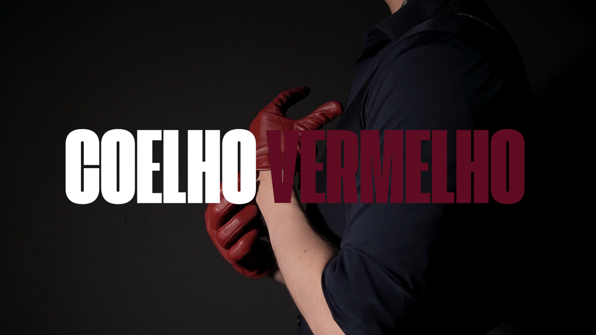

Coelho Vermelho
Curta-metragem · 2026 · Câmera, fotografia, luz e decupagem
Exercício audiovisual gravado em duas horas, com foco em sugestão como princípio narrativo. Referências em De Palma, Argento e Lynch — transformar espaços cotidianos em ambientes de ameaça por meio de enquadramento, cor e atmosfera.
Assistir projeto ↗Assumi a operação de câmera, a construção de luz, a direção de fotografia, o maquinário e a decupagem da cena, concentrando meu trabalho na definição visual e na organização da tensão dramática.
O objetivo foi criar uma cena que comunicasse mais pelo que sugere do que pelo que revela, exigindo decisões rápidas, precisão técnica e clareza visual dentro de um prazo extremamente restrito.